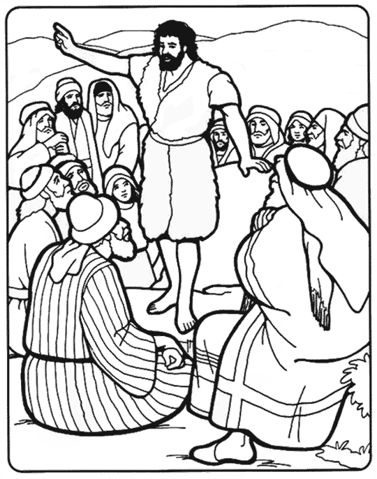

First Baptism Origins
March 2, 2018

VATICAN- Receiving a baptism has been an integral part in a good Christians life for generations. While many have participated in the practice, few actually know the origins of the ceremony. In fact, Vatican priests have kept the true genesis of the act a secret... that is, until now.
In a secretive press conference open to only a select few journalists, Pope Francis allowed one of his top Bishops to reveal the truth regarding the first baptism. Cardinal Angelo Scola stepped up to the podium and explained thusly.
In a secretive press conference open to only a select few journalists, Pope Francis allowed one of his top Bishops to reveal the truth regarding the first baptism. Cardinal Angelo Scola stepped up to the podium and explained thusly.
In the early 1st century in ancient Rome, a group of passersby stumbled upon a self-proclaimed holy man dubbed John the Baptist, who at the time was attempting to hold an infant's head underwater. When he was questioned by the group, a visibly surprised John explained, 'Oh you thought... psh no! I would never! I can totally see how this looks, but there is a perfectly reasonable explanation for all this.' then a 5-15 second pause ensued (Historians dispute over the exact time, explained Scola). 'This is to make the baby holy?' To which the crowd felt relieved because drowning infants is just something you didn't want to see back in that time, as most people actually thought babies were innocent and cute. One of the members of the group asked John if they should all dunk there babies in water, to which John replied 'Drown all your babies! You people make me sick!... oh wait right the holy thing... ya sure, go nuts.'"Upon hearing the true origin of the practice, members of the congregation were seen rushing to their cars, presumably to dunk their offsprings in the nearest body of water.